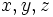
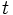

De: La Frikipedia, la enciclopedia extremadamente seria.
De: La Frikipedia, la enciclopedia extremadamente seria. De: La Frikipedia, la enciclopedia extremadamente seria.

|
Este artículo participa del Certamen de Adopción, así que mientras tenga esta plantilla no lo toques porque sino este gatito se enojará contigo. |
«Crearé mi propia ciencia, con juegos de azar y mujerzuelas»
~ uno de los inventores de la geometría antes de inventar la geometría.
«La geometría es el arte de pensar bien y dibujar mal»
~ Poincaré enunciando la ley universal de la geometría.
«Yo me llamo Ralph»
~ Ralph Wiggum cada que le preguntan sobre geometría en la escuela.
La geometría (del griego ρεηδετΘ-ΙδΙΘΤα; o para que lo entiendan todos los idiotas amigos frikipediastas, geo: tierra y metria: medida del pene), es una rama de las matemáticas que se ocupa del estudio de las lineas, círculos y demás idioteces que todos dibujamos en los libros cuando estamos aburridos. Tiene múltiples aplicaciones, como destruir la infancia de IP anónima, aunque es especialmente famosa porque solo los seres más inteligentes del planeta (los espárragos y los delfines) la entienden perfectamente, mientras que para especies subdesarrolladas, como la humana, es más un medio de tortura y de control mental.
A pesar de todo esto, sigue siendo lo más fácil de las matemáticas (sino me crees aprende cálculo o cualquier pendejada similar), por lo que Obama y la CIA la usan para desarrollar armas en caso de un apocalipsis zombi, e incluso sueñan con emplearla para controlar a los wombats (menudo objetivo tiene ese negro de mierda gobierno).
La Geometría fue inventada en el año 666 (lo cual explica casi todo sobre la misma) para medir terrenos amarillos. Dado que estaba vinculada al lucrativo negocio inmobiliario, sus iniciadores, como Pitágoras, lo hacían de un modo secreto y esotérico. Posteriormente, Euclides traicionó el secreto y reunió las esferas del dragon todos sus conocimientos sobre esta ciencia oscura en un libro de recetas denominado "Los Elementos Del Buen Sexo". Por aquel entonces, la Geometría se basaba principalmente en el uso de consoladores plastilina y en los muñecos recortables, de manera que era una Ciencia manejable, cómoda y que se podía llevar en un maletín del tamaño del cerebro de Homer (bueno, tampoco así de manejable).
Posteriormente, se quiso emplear este Arte para medir cosas tan inquietantes como el tamaño del pene Universo o para probar la existencia de Diox. Descartes decidió que, por sus tamaños, algunos objetos no cabrían en un maletín, y tuvo la ocurrencia de emplear letras para representarlos (menuda idiotez). A partir de ese momento,  significaron largo, ancho y alto. Sin embargo, al atarse los cordones de los zapatos, se percató de que  resultaba más estético para hablar de cosas grandes, mientras que 0 era mejor para hablar de cosas diminutas (como el cerebro de tu madre).
resultaba más estético para hablar de cosas grandes, mientras que 0 era mejor para hablar de cosas diminutas (como el cerebro de tu madre).
Con el paso de los años, han ido significando cualquier otra cosa, dependiendo de los problemas oculares del geómetra de turno. Además, Einstein añadió otra letra, la , para significar la dimensión del tiempo (tan creativo, ¿No?) y así hacerla útil para computar los trayectos de cada tren, tranvía o avión que llega retrasado.
Para llegar a ser la gran ciencia buena para nada que todos conocemos, la geometría tuvo que sufrir muchos cambios con el paso de los años. Para empezar, tenia que darse a conocer, razón por la cual los matemáticos locos de la antigüedad empezaron a pintar círculos en el lomo de los camellos o de las vacas, hecho muy reprochado por quienes se los cogían los dueños de dichos animales, haciendo ver a la geometría como algo malo. Para revertir esto, grandes mentes como tu abuela o Pitagoras se empeñaron en hacer cosas productivas para las personas; inicialmente tomaron una caja rectangular sin un costado y metieron dentro a un par de enanos, y así nació la televisión (las otras historias sobre este invento son falsas como las tetas de tu tía y no las debes creer o el Papa te violara). Al ver el éxito que tenían las cosas geométricas, una tarde Gandalf (Sí, ese mago idiota) se dijo a sí mismo: "mi mismo, debo inventar algo geométrico para que los enanos feos esos me recuerden" y tomo un cuadrado de papel, le puso marihuana encima y lo enrollo formando una linea recta, con lo que termino inventado el porro (¡Gracias Gandalf, gracias!).
La Geometría sigue siendo hoy día una puta ciencia inútil muy útil para muchas estupideces, como dibujar penes en baños públicos o los pechos de tu abuela en las sillas de la iglesia. Otras aplicaciones incluyen el diseño de la tapa de los retretes y de el agujero de los CDs (aunque no lo creas, al principio tenían forma de ornitorrinco, lo que era muy poco practico, aunque cojonudamente divertido).
Muchas religiones han tratado de prohibir la geometría entre sus adeptos, pues consideran que dibujar un buen par de tetas es malo, mientras que violar niños, destruir otras religiones y engañar a las personas para robarles su dinero no lo es; a pesar de esto, muchos "geometrologos" (así es, existen idiotas que creen que la geometría es una religión) han logrado preservar sus costumbres pendejas y poco recomendables, y han conseguido que esta ciencia maligna se siga viendo en colegios y universidades, para volvernos locos, por los putos siglos de los siglos.
Hoy en día es muy común también tener geometría en lo que los geometristas llaman "múltiples dimensiones", aunque esto no es que sirva de a mucho ya que no podemos ver en 4 o más dimensiones, a menos que estemos bajo los efectos del alcohol o de un buen porro. De todas formas la geometría en 3 dimensiones, o como se le suele llamar: 3D (3 dildos), es muy aplicada en la actualidad, y permite crear hermosos diseños, como el que tenemos a la izquierda de este montón de tonterías.
Dicen las malas lenguas que es posible hacer rituales malignos utilizando principios básicos de la geometría. Por ejemplo, para invocar un trasero al aire), luego todos los asistentes se formarán en una linea detrás tuyo y te darán lo que mereces (¡y tu que pensabas que la geometría no era divertida!).
Por otro lado, si eres un degenerado, un idiota, un descerebrado, un tonto que nunca podrá conseguir el aprecio de nadie, un buitre que lo único que hace es abusar de sus padres hasta que estos tengan los cojones el valor para mandarte a freír espárragos (en pocas palabras, un frikipedista promedio), es casi seguro que lo único que te sirve y lo que más deseas es obtener control sobre las personas, por lo que debes acudir al poder de esos rectángulos malignos con un rostro dibujado en un extremo (también conocidos como "billetes") y usarlos para comprar en el mercado negro las personas que desees (cómo consejo, en África venden gente a muy bajo precio).
| |
|
Álgebra y Aritmética
Geometría
Estadística
|
Autor(es):